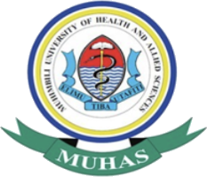
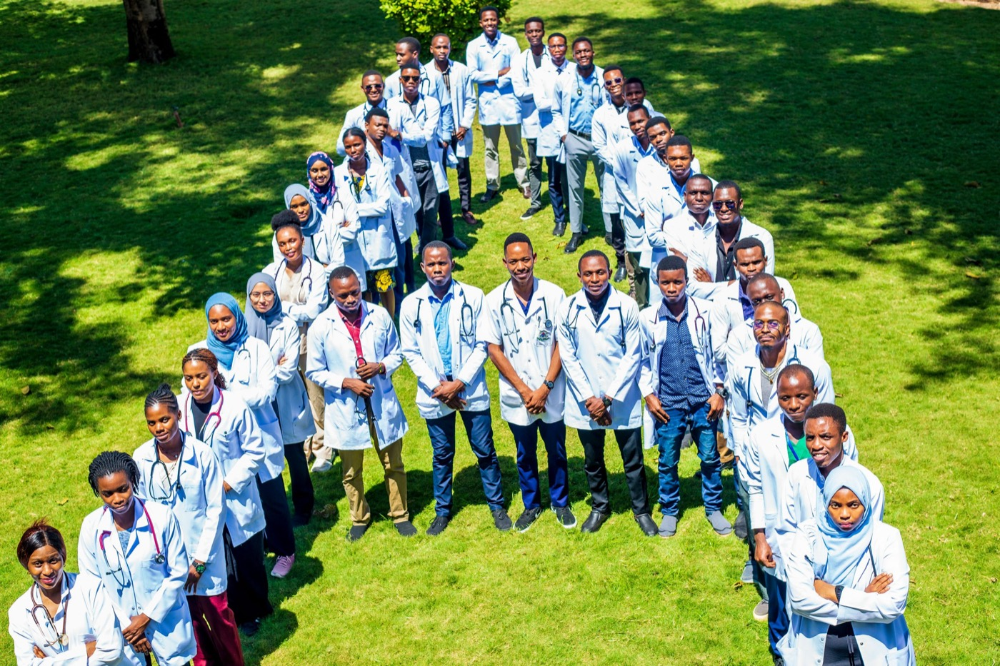
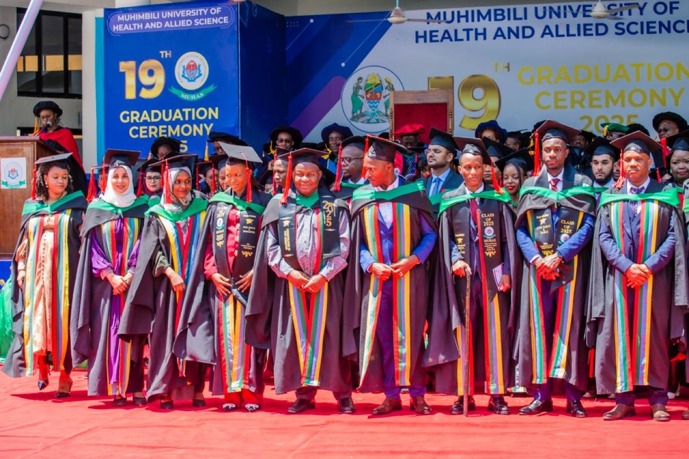
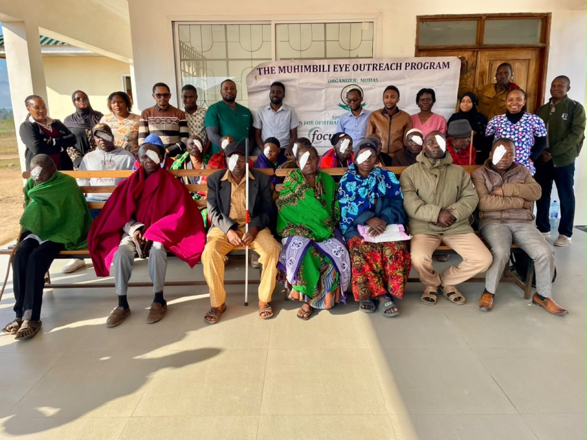
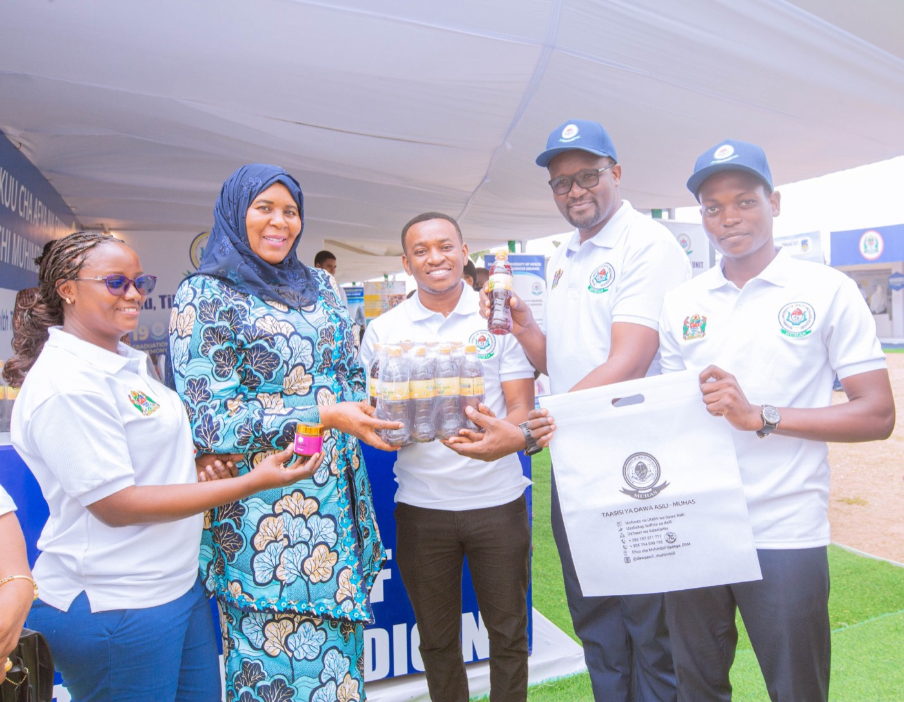
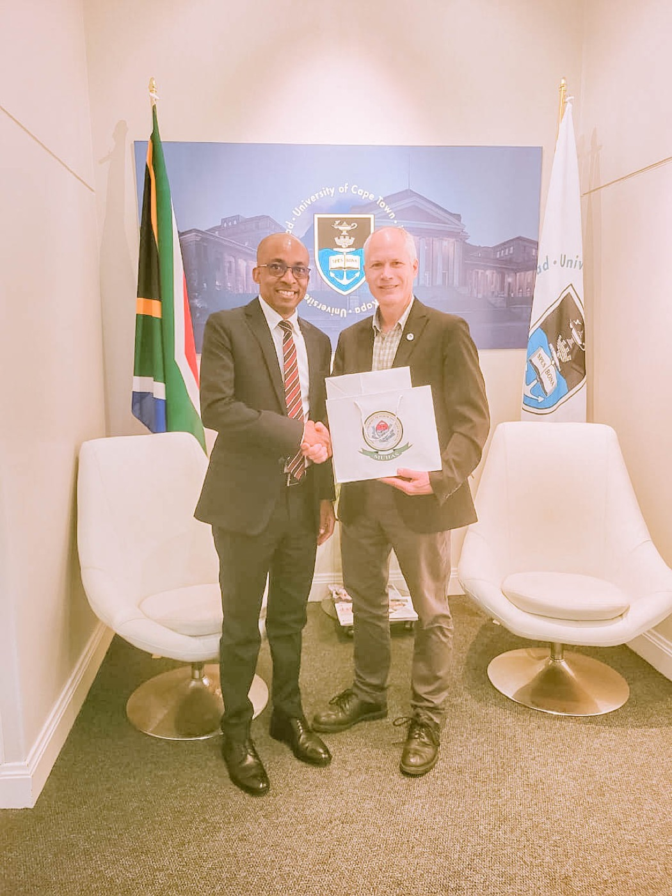
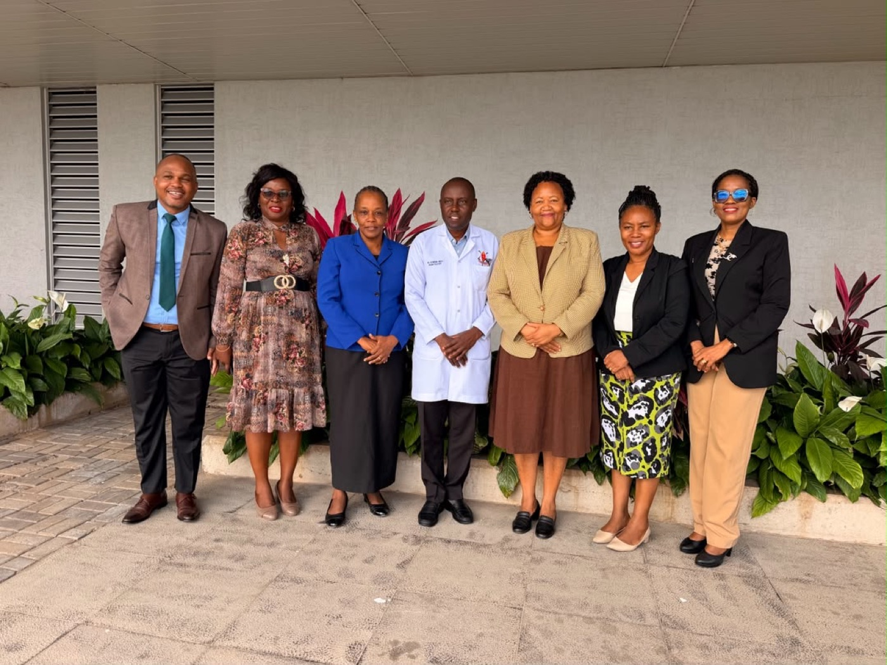

Vision
A world-class university excelling in health training, research, innovation, and services.

MUHAS Review Elimu · Tiba · Utafiti
The University Magazine
Tanzania’s premier in health training, research and consultancy services
In this issue
01 From the Vice Chancellor
I wish to warmly welcome you to Muhimbili University of Health and Allied Sciences, the first and leading public university for health sciences in Tanzania. We commend your interest in learning more about MUHAS, and we are confident that your curiosity will be satisfied as you explore who we are.
Here you will discover the wide range of programmes offered by MUHAS in Medicine, Dentistry, Pharmacy, Nursing, Public Health, Laboratory Sciences and other Allied Health Sciences, at both undergraduate and postgraduate levels — our long-established programmes alongside newly introduced undergraduate programmes in Biomedical Engineering, Midwifery and Nurse Anaesthesia, and eleven new postgraduate programmes offered across our schools and institute.
MUHAS also prides itself on hosting a specialised research institute dedicated to traditional medicine — reflecting our commitment to advancing knowledge, research, innovation and healthcare in Tanzania and beyond.
A. A. R. Kamuhabwa Professor of Pharmacology · Vice Chancellor
02 Who We Are
Vision
A world-class university excelling in health training, research, innovation, and services.
Mission
To provide transformative health training, conduct high-impact research, and deliver quality services by leveraging technology and innovation.
Motto
Elimu · Tiba · Utafiti
Education · Care · Research
The year in numbers 2025 – 2026
03 Our Story
MUHAS traces its origins to the Dar es Salaam Medical School, established in 1963. Every change of name since has been a widening of the same mandate — to advance knowledge through transformative education, research, innovation and public service in health and allied sciences.
1963 – 1967
The beginning: a medical school for a newly independent nation.
1968 – 1969
The school becomes the Faculty of Medicine of Dar es Salaam University College, then part of the University of East Africa.
1970 – 1990
After the dissolution of the University of East Africa, the Faculty joins UDSM. From 1976 it is incorporated within the Muhimbili Medical Centre.
1991 – 2006
Upgraded to a constituent college of UDSM through Parliament Act No. 9 of 1991. In 1996 MUCHS merges with the Muhimbili Medical Centre, tying education, research and healthcare service together.
2007 – Present
Following the Universities Act No. 7 of 2005, MUHAS is established in 2007 through its Charter of Incorporation — an autonomous public university, and today a university of three campuses.

04 The Leaders
Top management at MUHAS is held by four professors, each an active researcher in their own right. Their work spans pharmacology, sickle cell disease, tuberculosis and malaria, and public health nutrition.
Vice Chancellor
Professor of Pharmacology · Department of Clinical Pharmacy and Pharmacology
Holds a Bachelor of Pharmacy from the University of Dar es Salaam (1994), and Masters, PhD and postdoctoral fellowship in Pharmacology from the Catholic University of Leuven, Belgium. He has published over 110 peer-reviewed research articles, with more than twenty years of research experience in cancer, HIV, malaria and cardiovascular disease — including bladder cancer, malaria in pregnancy, hypertension and rheumatic heart disease. Since 2019 he has served as an advisor to the Sickle Cell Programme at MUHAS.
Deputy Vice Chancellor — Academic
Physician-scientist · Biomedical sciences
Medical degree, University of Dar es Salaam (2005); doctorate, Dartmouth College (2012); postdoctoral fellowship, Harvard Medical School (2014). He is Principal Investigator of the NIH/NHLBI-funded Sickle Pan-African Research Consortium (SPARCO) — Tanzania, and Co-PI of the SPARCO Clinical Coordinating Centre within the wider SickleInAfrica consortium spanning eight African countries. He also serves on the board of Young Scientists Tanzania.
Deputy Vice Chancellor — Planning, Finance and Administration
Professor of Applied Biomedical Sciences · Biochemistry and Molecular Biology
Teaches biochemistry, molecular biology and the genetics of human disease. He holds a Bachelor of Veterinary Medicine, a masters with a biomedical research background, and a PhD in Nutritional Immunology, with 25 years of teaching and research in tropical diseases — particularly tuberculosis and malaria — and over 70 publications. He coordinates the Higher Education for Economic Transformation (HEET) project, supported by the World Bank under the Ministry of Education, Science and Technology.
Deputy Vice Chancellor — Research and Consultancy
Professor of Public Health Nutrition · School of Public Health and Social Sciences
Liaison Professor at Kumamoto University, Japan; Honorary Senior Fellow at Oxford University; and International Scholar at the Center for Global Health, University of Pennsylvania. At MUHAS he established the PhD and MSc programmes in Nutrition Epidemiology and co-leads a PhD programme in Bioethics. He has disseminated over 120 peer-reviewed articles and authored four book chapters, and previously served as a clinician at Muhimbili National Hospital and at the Department of Nutrition for Health and Development at WHO headquarters in Geneva.
05 Our Culture
In executing its mission, the University is guided by five core values. They are not decoration on a wall; they are what the institution has agreed to be held to.
i
Pursuit of the highest standards in training, research, service delivery and conduct, with a strong commitment to continuous improvement and academic rigour.
ii
Upholding ethical behaviour, transparency and responsibility in all institutional activities, ensuring trust and credibility in the eyes of stakeholders.
iii
Embracing creative solutions, digital transformation, climate-smart practices and diversified revenue strategies that ensure institutional resilience and long-term financial sustainability.
iv
Ensuring fairness, respect for diversity, gender equity, and meaningful inclusion of marginalised and disadvantaged populations.
v
Fostering mutually beneficial partnerships and engaging stakeholders through responsive research, service and outreach that address national and global health challenges.
06 In the Field

Outreach
Through its Department of Ophthalmology, and in collaboration with Focus Foundation and Charity Vision Tanzania, MUHAS provided specialised eye care to 650 patients during a five-day outreach programme at Gairo District Hospital.
The team diagnosed glaucoma, cataracts and refractive errors, and performed 83 sight-restoring surgeries — expanding access to quality eye care and preventing avoidable blindness in underserved communities.

Innovation
At the National Education, Skills and Innovation Week at Usagara Secondary School, Tanga Regional Commissioner Amb. Dr. Batilda Buriani praised the innovations developed by MUHAS students and researchers — technologies aimed squarely at real problems in the health sector.

Partnership
Deputy Vice Chancellor for Academic Prof. Emmanuel Balandya met University of Cape Town Deputy Vice Chancellor for Teaching and Learning Prof. Brandon Collier-Reed. Both institutions agreed to begin developing a Memorandum of Understanding for joint academic, research and innovation initiatives.

Clinical training
Led by the Principal of the College of Medicine, Prof. Enica Richard, MUHAS management held discussions with the management of Muhimbili National Hospital Mloganzila on operationalizing the College of Medicine at the Mloganzila Campus, and on strengthening clinical training opportunities for students.
Milestone
MUHAS launched its Dental Sedation Unit alongside a Memorandum of Understanding with Ankara University and TİKA for the inaugural Paramedic Education initiative in Tanzania — officiated by Vice Chancellor Prof. Appolinary R. Kamuhabwa and Prof. Dr. Necdet Ünüvar, with the Ambassador of the Republic of Türkiye to Tanzania in attendance.
07 The Campuses
Upanga, Ilala District, Dar es Salaam
The historic heart of the University, beside Muhimbili National Hospital.
Ubungo District, Dar es Salaam
Roughly 3,800 acres, now preparing to host the College of Medicine.
Ujiji District, Kigoma Region
101 acres under development, supporting the University’s future expansion.
Bagamoyo District, Coast Region
46,085.7 m² of classrooms, laboratories, hostels, residences and a canteen for field training and community-based learning.
08 Academic Units
Programmes are delivered through the University’s college, schools, institute and directorates — from biomedical and clinical sciences to dentistry, nursing, pharmacy, public health and traditional medicine.
The Institute of Traditional Medicine is a specialised research institute dedicated to traditional medicine — something few universities in the region can claim.